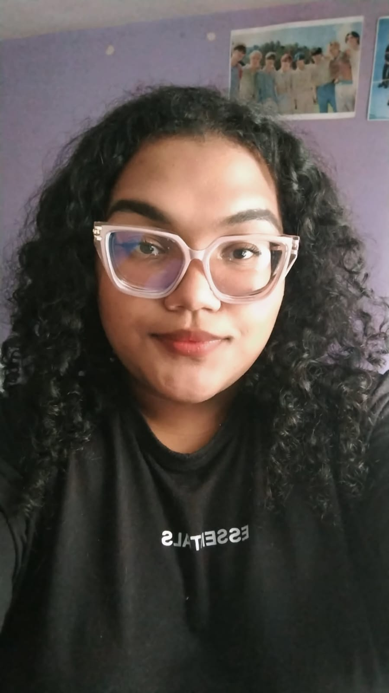

Soacha, Colombia | Tel: +57 3226213492 | dansvm0@gmail.com
Estudiante de Ingeniería de Software en etapa inicial de formación, con alto interés en el desarrollo de software y las nuevas tecnologías. Me caracterizo por ser una persona responsable, proactiva y con gran disposición para aprender de manera continua. Actualmente me encuentro fortaleciendo mis conocimientos en programación y bases de datos, con motivación por desarrollar habilidades en el área de desarrollo web. Cuento con experiencia en atención al cliente, lo que me ha permitido desarrollar habilidades comunicativas, trabajo en equipo y enfoque en la solución de problemas. Busco una oportunidad de prácticas profesionales como Técnica en programación de aplicaciones de software, en una compañía donde pueda adquirir experiencia, aplicar mis conocimientos básicos y crecer dentro del área tecnológica, aportando compromiso, actitud de aprendizaje y dedicación